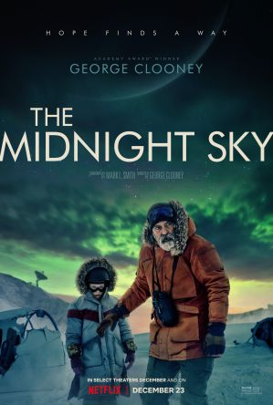

《驚天營救》
2020 | 16+ | 1 小時 57 分鐘 | 書籍改編的電影
一名冷酷的傭兵被派到孟加拉營救毒梟被綁票的兒子，這場任務雖然致命而危險，卻也帶來深思自省的契機。
主演：克里斯·漢斯沃，魯哈克什·賈斯瓦，蘭迪普·弘達

《蒙上你的眼》
2018 | 16+ | 2 小時 4 分鐘 | 劇情片
五年前，看不見的不祥存在驅使社會大多數人自殺。五年後，一名倖存者和她的兩個孩子孤注一擲，奮力逃離險境，渴望抵達安全之地。
主演：珊卓·布拉克，崔凡提·羅茲，約翰·馬可維奇
《史賓賽的機密任務》
2020 | 16+ | 1 小時 51 分鐘 | 書籍改編的電影
有前科的前員警史賓賽與滿懷抱負的拳手霍克，兩人聯手揭發兩名波士頓警察之死及其背後邪惡的陰謀。
主演：馬克·華伯格，溫斯頓·杜克，亞倫·阿金
《鬼影特攻：以暴制暴》
2019 | 16+ | 2 小時 8 分鐘 | 冒險動作
一位科技業的億萬富翁假裝自己死亡，再從各國招募間諜組成一支小隊，準備挑戰大膽的血腥任務，扳倒一個殘酷的獨裁者。
主演：萊恩·雷諾斯，梅蘭妮·蘿倫，柯瑞·霍金斯

《奪命鴛殃》
2019 | 13+ | 1 小時 37 分鐘 | 懸疑推理
一名紐約市警察和理髮師妻子期待歐洲之旅已久，卻在億萬富翁的遊艇上碰到離奇命案，搞得他們必須急忙偵破此案。
主演：亞當·山德勒，珍妮佛·安妮斯頓，路克·伊凡斯

《不死軍團》
2020 | 16+ | 2 小時 5 分鐘 | 書籍改編的電影
四位長生不死的戰士數個世紀以來一直在暗中保護人類，他們剛發現一位擁有相同能力的新夥伴，卻被覬覦這份神奇力量的惡人盯上。
主演：莎莉·賽隆，基基·萊恩，馬文·坎薩利
《天才少女福爾摩斯》
2020 | 13+ | 2 小時 4 分鐘 | 劇情片
勇敢無畏的青少女艾諾拉在尋找失蹤的母親時，運用自己的偵探技能智取哥哥夏洛克，並幫助一名逃跑的勳爵。
主演：米莉·芭比·布朗，亨利·卡維爾，山姆·克拉弗林

《超能計畫》
2020 | 16+ | 1 小時 53 分鐘 | 犯罪電影
一種危險的新型藥丸出現，這藥能讓人在食用後獲得短暫超能力。為了追到藥的源頭，退役軍人、少女和警察在紐奧良碰撞交鋒。
主演：傑米·福克斯，喬瑟夫·高登李維，多米妮可·斐許巴克

《永夜漂流》
2020 | 13+ | 1 小時 58 分鐘 | 劇情片
全球浩劫過後，獨居北極的科學家與時間賽跑，嘗試連絡上一隊太空人，警告他們不要返回地球。
主演：喬治·克隆尼，費莉絲蒂·瓊斯，大衛·奧伊羅